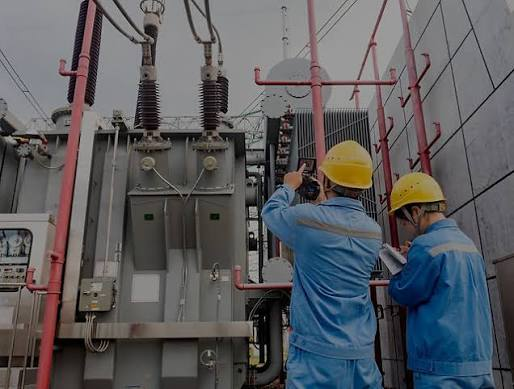

.jpg)
Carrera de Software
Los ingenieros de software se especializan en el diseño y el desarrollo de aplicaciones software, y están formados principalmente en matemáticas y Ciencias Computacionales; y los conocimientos y habilidades adquiridas a partir de esta formación los aplican en el diseño, construcción y despliegue de esas aplicaciones. Por ello será capaz de comprender los requisitos reales del proyecto y mantenerse centrado en ellos. Comprender quién es el cliente a fin de mantener la perspectiva correcta de las prioridades del proyecto. Generar un plan para implementar y producir un diseño para todo tipo de proyectos. Elegir las mejores herramientas para el trabajo de acuerdo con las necesidades del proyecto. Mantener un alto nivel de profesionalismo y la disciplina necesaria para alcanzar estándares consistentes de codificación y de prueba. Ejecutar pruebas completas y adecuadas al código para asegurar los más altos niveles de fiabilidad y facilidad de mantenimiento en el producto. Finalmente comprender que la fase de mantenimiento es la más cara de cualquier proyecto software.

Carrera de Ingeniería Industrial
La Carrera Ingeniería Industrial promueve resultados de aprendizaje replanteados hacia el desarrollo de capacidades y actitudes de los futuros profesionales para consolidar sus valores referentes a la pertinencia, la bio-conciencia y la participación responsable. De ahí que los profesionales interpretarán y aplicarán las técnicas y tecnologías más adecuadas que contribuyan a alcanzar la eficiencia, eficacia y competitividad de la organización, así como el desarrollo sostenible, especialmente en la optimización de recursos, los ahorros energéticos y en la preservación del ecosistema. Serán capaces de examinar los procesos con un enfoque cultural, social, político, económico, ambiental y tecnológico sustentado en la primacía de los intereses sociales y nacionales sobre los particulares y con actuaciones éticas y morales propias de un Ingeniero Industrial comprometido con la sociedad y su país. Aplicarán en su práctica profesional el cumplimiento riguroso de las legislaciones, normativas y código de conducta demostrando capacidades para la comunicación oral y escrita. Diseñarán soluciones con rigor científico que demuestren sus capacidades de razonamiento y creatividad; además diagnosticarán las situaciones existentes y los posibles escenarios futuros de realización con el rigor metodológico que las investigaciones de su campo de acción requieren. Serán capaces de gestionar y operar los procesos en organizaciones de la producción y los servicios en toda la cadena de suministro, aprovisionamiento, transportación, producción, venta y servicios posventa con enfoque integrador y sistémico. Obtendrán y realizarán valoraciones de la información científica y técnica necesaria en los idiomas español e inglés apoyándose en la utilización de los recursos informáticos que se generan sistemáticamente.
.jpg)
Carrera de Automatización y Robótica
El Ingeniero/a en Automatización y Robótica de la Universidad Técnica de Ambato es un profesional con competencias, habilidades y destrezas que garantizan el dominio de algoritmos de control útiles para automatizar los diferentes procesos en la industria, fomentando la investigación científica, partiendo de un modelo matemático desde una visión constructivista, conectivista y totalizadora, promoviendo la solución de problemas mediante la integración de tecnologías inteligentes con la creatividad, innovación y emprendimiento. Coordina con actitud crítica y autocrítica el diseño, implementación y evaluación de proyectos de automatización y robótica, a fin de crear nuevos procedimientos técnicos contribuyendo al desarrollo del sistema productivo del país, respetando el pensamiento divergente. Desarrolla técnicas de control industrial en sistemas, procesos y productos para garantizar su funcionalidad adecuada, validando previamente su funcionamiento mediante el prototipado. El Ingeniero en Automatización y Robótica valora el trabajo en equipo, demuestra su lealtad y tolerancia, inculca actitudes de iniciativa y superación, manifestando su práctica ética con responsabilidad social y ambiental.
Ingeniería y tecnología. Formación para el futuro.
La formación en ingeniería permite desarrollar conocimientos científicos, tecnológicos y profesionales orientados a resolver problemas de la sociedad.
Innovación. Nuevas soluciones.
Los estudiantes desarrollan capacidades que les permiten participar en proyectos relacionados con software, industrialización, automatización y robótica.
Profesionales preparados. Comprometidos con la sociedad.
La formación profesional busca desarrollar conocimientos, habilidades, responsabilidad y valores necesarios para aportar al desarrollo tecnológico y productivo del país.